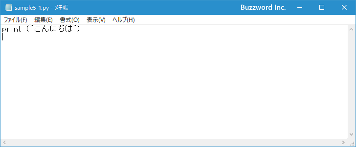
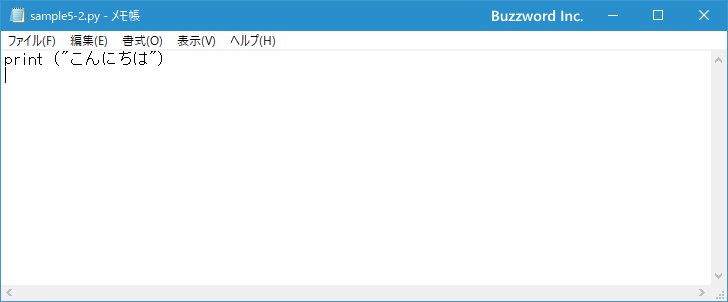
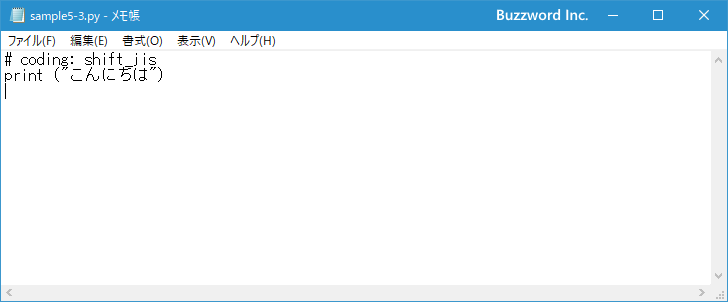
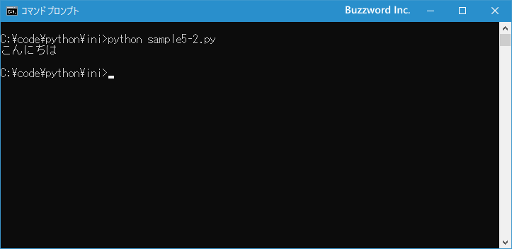

プログラムを保存するファイルで使用する文字コードを設定する
Python のスクリプトが記述されたファイルは、現在のバージョンでは文字コードが UTF-8 で記述されているものとして処理されるため、別の文字コードで記述している場合はなんの文字コードを使用しているのか設定が必要となります。ここではプログラムを保存するファイルで使用する文字コードを設定する方法について解説します。
ファイルで使用している文字コードを設定する
Python ではスクリプトが記述されたファイルは文字コードとして UTF-8 が使用されているものとして扱います。その為、ファイルの文字コードとして UTF-8 で保存する場合には特別な設定は必要ありません。
例えば次のような簡単なプログラムが記述されたファイルを作成し、 文字コードとして UTF-8 で保存してみます。
print ("こんにちは")

このプログラムを Python で実行してみると次のように正常に実行されました。
次に全く同じ内容のプログラムが記述されたファイルを作成し、文字コードとして Shift_JIS で保存してみます。
print ("こんにちは")

このプログラムを Python で実行してみると次のようにエラーが表示されて実行できませんでした。
SyntaxError: Non-UTF-8 code starting with '\x82' in file sample5-2.py on line 1, but no encoding declared; see http://python.org/dev/peps/pep-0263/ for details
デフォルトで使用される UTF-8 以外の文字コードでプログラムを記述したファイルを保存する場合、ファイルの先頭に使用している文字コードを次の書式に従って宣言する必要があります。
# coding: エンコーディング名
または
# coding=エンコーディング名
※ なお UNIX などの環境でファイルの先頭行に #!/usr/bin/env python3 などが記述されている場合は 2 行目に指定してください。
例えば文字コードとして Shift_JIS を使ってファイルを保存している場合には、ファイルの先頭に次の 1 行を追加します。
# coding: shift_jis
では実際に試してみます。先ほどエラーが出て実行できなかったファイルを次のように修正し、あらためて文字コードとして Shift_JIS を使って保存します。
# coding: shift_jis
print ("こんにちは")

このプログラムを Python で実行してみると今度は正常に実行されました。

このように Python のスクリプトが記述されたファイルを保存する場合、特に理由がなければ UTF-8 を使って保存するのが基本となりますが、別の文字コードを使用する場合にはファイルの先頭で使用する文字コードを設定してください。
なおエンコーディング名として使用できる代表的な値は次のとおりです。
| Codec | 別名 |
|---|---|
| ascii | 646, us-ascii |
| cp932 | 932, ms932, mskanji, ms-kanji |
| euc_jp | eucjp, ujis, u-jis |
| iso2022_jp | csiso2022jp, iso2022jp, iso-2022-jp |
| shift_jis | csshiftjis, shiftjis, sjis, s_jis |
| utf_8 | U8, UTF, utf8 |
-- --
Python のプログラムを保存するファイルで、 UTF-8 以外の文字コードを使用する場合の設定方法について解説しました。
( Written by Tatsuo Ikura )

著者 / TATSUO IKURA
初心者～中級者の方を対象としたプログラミング方法や開発環境の構築の解説を行うサイトの運営を行っています。